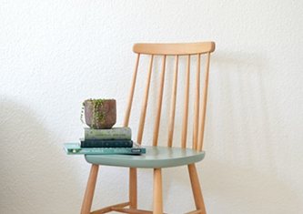
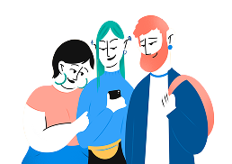

Как не утонуть в тревоге
и управлять своими
страхами
Содержание
- Как понять, что отношения с мамой были дисфункциональными и привели к травме?
- Мама привет!
- Под подзаголовок подзаголовком
- Под под подзаголовок подзаголовком
- Под под под подзаголовок подзаголовком
- Ну вот опять заголовок который как «привет мама»
- Как понять, что вы страдаете от материнской травмы?
Заголовок h3
Один из самых важных навыков, которые может
дать работа с психотерапевтом - умение в
разных ситуациях по-разному обходиться со
своими эмоциями. Снять этот процесс с
автопилота и перевести его в поле сознания.
Давайте, к примеру, разберем тревогу. Можно
разложить перед собой целую коллекцию
доступных реакций и выбрать нужную:
Мы знаем, что нуждаться в помощи и поддержке в
трудные периоды жизни абсолютно нормально для
любого человека, и стремимся сделать
психотерапию безопасной, удобной и доступной
каждому
Что еще можно делать с тревогой?
Управлять ей через что-то внешнее: включать
музыку, которая создает другое настроение, сесть
за работу с цифрами, которая быстренько
активизирует другие участки мозга, читать блоги,
которые вас успокаивают и отвлекают.
А еще порой можно разрешить себе тревогу заесть
чем-то вкусным. Это, конечно, не самая здоровая
стратегия, но в ряде ситуаций можно считать ее
вполне рабочей. Особенно, когда внутренний
ресурс на нуле, а поддерживающее окружение не в
доступе.
Онтогенез речи отражает групповой эриксоновский
гипноз.
Чем шире доступный вам репертуар реакций и чем более
осознанно вы можете выбирать из него то, что лучше
всего подойдет в каждой конкретной ситуации, тем
больше будет ваша устойчивость к стрессу, депрессии,
неопределенности, да и к жизни в целом.
Мы знаем, что нуждаться в помощи и поддержке в
трудные периоды жизни абсолютно нормально для любого
человека, и стремимся сделать психотерапию
безопасной, удобной и доступной каждому
Одна из ключевых задач психотерапии как раз и
заключается в том, чтобы этот репертуар расширять и
обучать человека пользоваться доступными ему
реакциями в той последовательности, пропорции и
объеме, которые подходят именно ему. Без оглядки на
то, "как правильно" или "как у других".

Чем шире доступный вам репертуар реакций и чем
более осознанно вы можете выбирать из него то,
что лучше всего подойдет в каждой конкретной
ситуации, тем больше будет ваша устойчивость к
стрессу, депрессии, неопределенности, да и к
жизни в целом.
А еще порой можно разрешить себе тревогу заесть чем-то вкусным.
А еще порой можно разрешить себе тревогу заесть чем-то вкусным.
Чем шире доступный вам репертуар реакций и чем более
осознанно вы можете выбирать из него то, что лучше
всего подойдет в каждой конкретной ситуации, тем
больше будет ваша устойчивость к стрессу, депрессии,
неопределенности, да и к жизни в целом.
Упражнение #1
Нужно последовательно напрягать и расслаблять
каждую мышцу в теле на несколько секунд.
Напрягать стоит довольно сильно, чтобы потом
отчетливее ощущать расслабляющий эффект. Начать
можно с пальцев ног и постепенно подниматься
вверх. Смысл в том, чтобы через напряжение дать
стрессу выход, а затем вновь привести себя в
спокойное состояние через расслабление

Чем шире доступный вам репертуар реакций и чем
более осознанно вы можете выбирать из него то,
что лучше всего подойдет в каждой конкретной
ситуации, тем больше будет ваша устойчивость к
стрессу.
Чем шире доступный вам репертуар реакций и чем более
осознанно вы можете выбирать из него то, что лучше
всего подойдет в каждой конкретной ситуации, тем
больше будет ваша устойчивость к стрессу, депрессии,
неопределенности, да и к жизни в целом.
Упражнение #2
Нужно последовательно напрягать и расслаблять
каждую мышцу в теле на несколько секунд.
Напрягать стоит довольно сильно, чтобы потом
отчетливее ощущать расслабляющий эффект. Начать
можно с пальцев ног и постепенно подниматься
вверх. Смысл в том, чтобы через напряжение дать
стрессу выход, а затем вновь привести себя в
спокойное состояние через расслабление

Чем шире доступный вам репертуар реакций и
чем более осознанно вы можете выбирать из
него то, что лучше всего подойдет в каждой
конкретной ситуации, тем больше будет ваша
устойчивость к стрессу, депрессии,
неопределенности, да и к жизни в целом.
Чем шире доступный вам репертуар реакций и
чем более осознанно вы можете выбирать из
него то, что лучше всего подойдет в каждой
конкретной ситуации, тем больше будет ваша
устойчивость к стрессу, депрессии,
неопределенности, да и к жизни в целом.

Одна из ключевых задач психотерапии как раз и
заключается в том, чтобы этот репертуар расширять и
обучать человека пользоваться доступными ему
реакциями в той последовательности, пропорции и
объеме, которые подходят именно ему. Без оглядки на
то, "как правильно" или "как у других".
Упражнение #1
Нужно последовательно напрягать и расслаблять
каждую мышцу в теле на несколько секунд.
Напрягать стоит довольно сильно, чтобы потом
отчетливее ощущать расслабляющий эффект. Начать
можно с пальцев ног и постепенно подниматься
вверх. Смысл в том, чтобы через напряжение дать
стрессу выход, а затем вновь привести себя в
спокойное состояние через расслабление

Загружаем
свободные окошки
свободные окошки
Все в порядке, сейчас мы перенаправим вас в
сервис записи Qlick, через который удобно
выбрать дату, время встречи и оплатить её
Лилия
Психолог
Опыт6 лет
43 года
С чем работает психолог
Тревога, тревожности
Подавленность
Тревога и панические атаки
8 Видео сессий
Проработать небольшие проблемы и
продвинуться
в решении сложных
запросов
в решении сложных
запросов
18 500 ₽
Откликается проблема?
Поможем подобрать специалиста
по работе с подобным запросом
по работе с подобным запросом